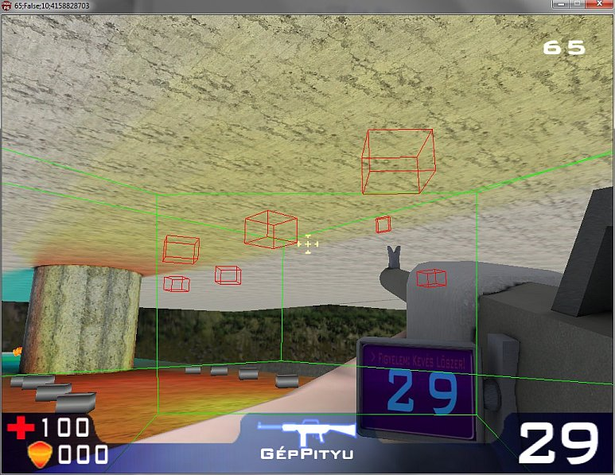

|
PURE API
0.3
PR00F's Ultimate Rendering Engine full documentation
|
|
PURE API
0.3
PR00F's Ultimate Rendering Engine full documentation
|
Idea of occlusion culling is that we separate objects into 2 groups: occluders and occludees.
Occluders are usually the big static objects like buildings in a map, we render them first so their depth data is written into the depth buffer first.
Occludees are usually smaller, but may be even more complex objects that might be occluded by occluders.
We do occlusion tests for each of the bounding box of the occludees, and see if we need to actually render any occludees.
Overall this can save some time, provided that:
"For the cost of rendering a bounding box, you can potentially save rendering a normal object. A bounding box consists of only 12 triangles, whereas the original object might have contained
thousands or even millions of triangles." (https://www.khronos.org/registry/OpenGL/extensions/ARB/ARB_occlusion_query.txt)
Example scene from PR00FPS with enabled occlusion culling where red bounding boxes represent occluded state of snails and other items above the player:
the ground level of the map occludes the objects represented by their red bounding boxes, so rendering of these objects can be skipped. In this particular example, only 5664 triangles were needed to be rendered in the frame when this picture was taken, compared to the 9076 triangles that otherwise would had been needed to be rendered without the use of occlusion culling method. 
"Because we can see through translucent objects (and they cannot be written to the depth buffer!), these can act only as occludees and not occluders.
On the other hand, opaque objects can be both occluders and occludees, which means that they should be sorted from front to back and rendered before translucent objects. After that, translucent objects are sorted back to front and rendered on-screen as well."
(https://developer.nvidia.com/gpugems/gpugems/part-v-performance-and-practicalities/chapter-29-efficient-occlusion-culling)
"Using bounding box occlusion queries may either help or hurt in fill-limited situations, because rendering the pixels of a bounding box is not free. In most situations, a bounding box will probably have more pixels than the original object. Those pixels can probably be rendered more quickly, though, since they involve only Z reads (no Z writes or color traffic), and they need not be textured or otherwise shaded."
(https://www.khronos.org/registry/OpenGL/extensions/ARB/ARB_occlusion_query.txt)
"When only depth testing or stencil writing is taking place, some new GPUs (such as the GeForce FX family) use a higher-performance rendering path.
In the past, hardware didn't benefit much when the color buffer was switched off during testing for the visibility of a bounding box, because the circuits for color and depth value output were in the same pipeline. Now, however, on newer hardware, if the color-buffer output is switched off, the pipelines are used for depth testing and the bounding box testing is faster."
(https://developer.nvidia.com/gpugems/gpugems/part-v-performance-and-practicalities/chapter-29-efficient-occlusion-culling)
"The fill-rate problem can get even worse, because sometimes a bounding box needs to be rendered from both sides, with front-facing and back-facing polygons! The catch is that when you test an object that is very close to the view origin, the viewer ends up inside the bounding box. That's why we need to render back faces also; otherwise, because of back-face culling, no pixels will be drawn on-screen, and we'll get a false result. To be safe, skip occlusion testing for models that are too near the viewer; it can really do more harm than good, and an object that close is definitely visible."
(https://developer.nvidia.com/gpugems/gpugems/part-v-performance-and-practicalities/chapter-29-efficient-occlusion-culling)
Note that since we are already in the rendering pipeline when making these decisions, and both the CPU and the GPU is involved, the process itself can slow down rendering from the perspective of the required synchronization between the CPU and GPU. More on this below.
Basically there are 2 techniques. Both has the potential bottleneck of CPU-GPU synchronization.
One way is to rasterize the occluders into a coverage buffer on the CPU, and then the depth testing for the bounding boxes of the occludees can be done on the CPU as well. This way the CPU on its own can decide which objects are occluded and should be skipped, but the rest are actually need to be rendered by the GPU. The latency of this decision on the CPU can introduce GPU starvation.
The other technique is if we use the GPU for deciding which objects are occluded. For this, HW occlusion queries can be used. This involves similar technique: first render the occluders, and then for the bounding box of each occludee, start an occlusion query. Although the queries are started by the CPU, they are executed by the GPU. Still CPU has to make the decision of skipping actually occluded objects based on the HW query results, so the CPU might need to wait for them to be finished. The result will tell if any pixels or fragments of the bounding box passed the depth test. This can also introduce potential GPU starvation. Note that such HW occlusion queries are not supported by mobile GPUs, in such case the first CPU-based method should be used.
Temporal coherence: if we know what's visible and what's occluded in one frame, it is very likely that the same classification will be correct for most objects in the following frame as well.
To get rid of potential pipeline stalls, in any of the above 2 cases, a more sophisticated approach is needed, where we use the information about occlusion during the rendering of the next frame.
"Usually, if an object is visible one frame, it will be visible the next frame, and if it is not visible, it will not be visible the next frame. Of course, for most applications, "usually" isn't good enough. It is undesirable, but acceptable, to render an object that isn't visible, because that only costs performance. It is generally unacceptable to not render an object that is visible.
The simplest approach is that visible objects should be checked every N frames (where, say, N=5) to see if they have become occluded, while objects that were occluded last frame must be rechecked again in the current frame to guarantee that they are still occluded. This will reduce the number of wasteful occlusion queries by almost a factor of N."
(https://www.khronos.org/registry/OpenGL/extensions/ARB/ARB_occlusion_query.txt)
Pseudo-code for an async (non-stop-and-wait) way of querying:
"The algorithm exploits the spatial and temporal coherence of visibility. (...)
Spatial coherence: storing the scene in a hierarchical data structure, processing nodes of the hierarchy in a front-to-back order. (...) If geometry is not the main rendering bottleneck, but rather the number of draw calls issued (Wloka 2003), then making additional draw calls to issue the occlusion queries is a performance loss. With hierarchies, though, interior nodes group a larger number of draw calls, which are all saved if the node is occluded using a single query. (...)
Temporal coherence: if we know what's visible and what's occluded in one frame, it is very likely that the same classification will be correct for most objects in the following frame as well. (...) If we want to have correct images, we need to verify our guess and rectify our choice in case it was wrong. In the first case (the node was actually occluded), we update the classification for the next frame. In the second case (the node was actually visible), we just process (that is, traverse or render) the node normally. The good news is that we can do all of this later, whenever the query result arrives. Note also that the accuracy of our guess is not critical, because we are going to verify it anyway. (...)
Issue occlusion queries only for previously visible leaf nodes and for the largest possible occluded nodes in the hierarchy (in other words, an occluded node is not tested if its parent is occluded as well). The number of queries issued is therefore linear in the number of visible objects."
(https://developer.nvidia.com/gpugems/gpugems2/part-i-geometric-complexity/chapter-6-hardware-occlusion-queries-made-useful)
The algorithm can be further optimized with a few ideas mentioned on the page in "6.6 Optimizations".
"The CHC algorithm works well in densely occluded scenes, but the overhead of hardware occlusion queries makes it fall behind even simple view-frustum culling (VFC) in some situations. (...) It traverses the hierarchy in a front-to-back order and issues queries only for previously visible leaves and nodes of the previously invisible boundary. Previously visible leaves are assumed to stay visible in the current frame, and hence they are rendered immediately. The result of the query for these nodes only updates their classification for the next frame. The invisible nodes are assumed to stay invisible, but the algorithm retrieves the query result in the current frame in order to discover visibility changes. (...) The algorithm works very well for scenarios that have a lot of occlusion. However, on newer hardware where rendering geometry becomes cheap compared to querying, or view points where much of the scene is visible, the method can become even slower than conventional view-frustum culling. This is a result of wasted queries and unnecessary state changes."
(https://www.cg.tuwien.ac.at/research/publications/2008/mattausch-2008-CHC/mattausch-2008-CHC-draft.pdf)
CHC++: a further optimized form of CHC bringing much better speedup.
Following texts are citations from: https://www.cg.tuwien.ac.at/research/publications/2008/mattausch-2008-CHC/mattausch-2008-CHC-draft.pdf
Queues for batching of queries: Before a node is queried, it is appended to a queue. Separate queues are used for accumulating previously visible and previously invisible nodes. We use the queues to issue batches of queries instead of individual queries. This reduces state changes by one to two orders of magnitude.
Details:
"It turns out that changes of rendering state cause an even larger overhead than the query itself. (...) Game developers refer to about 200 state changes per frame as an acceptable value on current hardware. The invisible nodes to be queried are appended to a queue which we call i-queue. When the number of nodes in the i-queue reaches a user-defined batch size b, we change the rendering state for querying and issue an occlusion query for each node in the i-queue. (...)
Similarly to CHC, our proposed method renders the geometry of previously visible nodes during the hierarchy traversal. However the queries are not issued immediately. Instead the corresponding nodes are stored in a queue which we call v-queue. (...) The queries for these nodes are not critical for the current frame since their result will only be used in the next frame. We exploit this observation by using nodes from the v-queue to fill up waiting time: whenever the traversal queue is empty and no outstanding query result is available, we process nodes from the v-queue. (...)
We propose to use an additional queue in the algorithm which we call render queue. This queue accumulates all nodes scheduled for rendering and is processed when a batch of queries is about to be issued. When processing the render queue the engine can apply its internal material shader sorting and then render the objects stored in the queue in the new order."
Multiqueries. We compile multiqueries (Section 5.1), which are able to cover more nodes by a single occlusion query. This reduces the number of queries for previously invisible nodes up to an order of magnitude.
Details:
"If some previously invisible part of a scene remains invisible in the current frame, a single occlusion query for the whole part is sufficient to verify its visibility status. Such a query would render all bounding boxes of primitives in this scene part, and return zero if all primitives remain occluded. (...) Our new technique aims to identify such scene parts by forming groups of previously invisible nodes that are equally likely to remain invisible. A single occlusion query is issued for each such group, which we call a multiquery. If the multiquery returns zero, all nodes in the group remain invisible and their status has been updated by the single query. Otherwise the coherence was broken for this group and we issue individual queries for all nodes by reinserting them in the i-queue."
Randomized sampling pattern for visible nodes. We apply a temporally jittered sampling pattern (Section 5.2) for scheduling queries for previously visible nodes. This reduces the number of queries for visible nodes and while spreading them evenly over the frames of the walkthrough.
Details:
"The original CHC algorithm introduced an important optimization in order to reduce the number of queries on previously visible nodes. A visible node is assumed to stay visible for nav frames and it will only be tested in the frame nav +1. (...) This simple method however has a problem that the queries can be temporally aligned. This query alignment becomes problematic in situations when nodes tend to become visible in the same frame. (...) The average number of queries per frame will still be reduced, but the alignment can cause observable frame rate drops. (...)
We found that the most satisfying solution is achieved by randomizing the first invocation of the occlusion query. After a node has turned visible, we use a random value 0 < r < nav for determining the next frame when a query will be issued. Subsequently, if the node was already visible in the previous test, we use a regular sampling interval given by nav."
Tight bounding volumes. We use tight bounding volumes (Section 6) without the need for their explicit construction. This provides a reduction of the number of rendered triangles as well as a reduction of the number of queries.
Details:
"We propose a simple method for determining tighter bounds for inner nodes in the context of hardware occlusion queries applied to an arbitrary bounding volume hierarchy. For a particular node we determine its tight bounding volume as a collection of bounding volumes of its children at a particular depth. (...)
Tight bounding volumes provide several benefits at almost no cost: (1) earlier culling of interior nodes of the hierarchy, (2) culling of leaves which would otherwise be classified as visible, (3) increase of coherence of visibility classification of interior nodes. The first property leads to a reduction of the number of queries. The second property provides a reduction of the number of rendered triangles. Finally, the third benefit avoids changes in visibility classification for interior nodes caused by repeated pull-up and pull-down of visibility."
https://documents.pub/document/visibility-optimization-for-games-sampo-lappalainen-lead-programmer-umbra-software-ltd.html
documents.pub_visibility-optimization-for-games-sampo-lappalainen-lead-programmer-umbra-software-ltd.ppt
https://developer.nvidia.com/gpugems/gpugems/part-v-performance-and-practicalities/chapter-29-efficient-occlusion-culling
https://community.khronos.org/t/occlusion-culling-with-arb-occlusion-query/68688/4
https://gamedev.stackexchange.com/questions/118651/opengl-occlusion-culling-huge-performance-drop
https://github.com/ychding11/GraphicsCollection/wiki/Occlusion-Culling-and-Visibility-Filter-in-Graphics
CHC: https://developer.nvidia.com/gpugems/gpugems2/part-i-geometric-complexity/chapter-6-hardware-occlusion-queries-made-useful
CHC++: https://www.cg.tuwien.ac.at/research/publications/2008/mattausch-2008-CHC/
(mattausch-2008-CHC-draft.pdf)
Battlefield: Bad Company: https://blog.selfshadow.com/publications/practical-visibility/
https://software.intel.com/content/www/us/en/develop/topics/gamedev.html
Software Occlusion Culling
https://software.intel.com/content/www/us/en/develop/articles/software-occlusion-culling.html
https://software.intel.com/content/www/us/en/develop/articles/masked-software-occlusion-culling.html
https://software.intel.com/content/www/us/en/develop/articles/merging-masked-occlusion-culling-hierarchical-buffers-for-faster-rendering.html
Core Techniques and Algorithms in Game Programming - Daniel Sanchez-Crespo Dalmau.pdf
3D Game Engine Architecture - Engineering Real Time Applications with Wild Magic - David H. Eberl.pdf
3D Game Engine Design - David H. Eberly.pdf
There are some online OpenGL capability reports can be used to find out how widely an extension is supported:
https://www.gpuinfo.org/
https://opengl.gpuinfo.org/listextensions.php
https://opengles.gpuinfo.org/
https://feedback.wildfiregames.com/report/opengl/